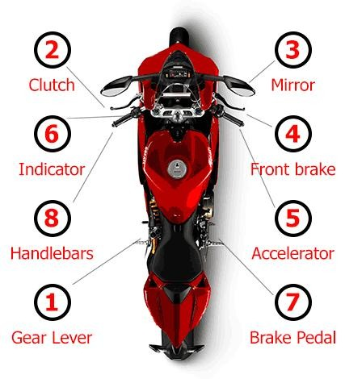
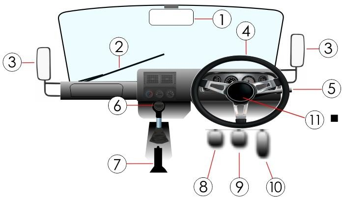
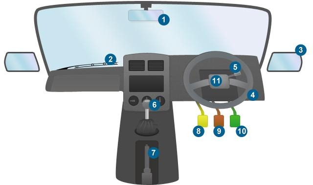

It is the driver’s responsibility for children under 14 years of age; adults are responsible for themselves.
Coki Driving School
Questions & Answers Manual
Use these 50 source questions to reinforce the theory. Open a question to review its answer.
Study note: These answers are based on the academy's supplied Questions and Answers Manual. Some legal rules and figures can change or depend on the situation; confirm current requirements with official guidance and always prioritise safe, lawful driving.
You should always carry your driver’s licence and your learner’s licence if you are still a learner driver.
At least every 2–8 seconds.
Within 24 hours. If there have been injuries, do not move the vehicles until the police/traffic officers have instructed you to do so.
60 km/h.
All approaching vehicles, including bicycles and motorcycles, and any pedestrians on the intersection.
If there is no time to stop before the line, if it is unsafe behind you, or if your vehicle is already over the line.
Keep both hands firmly on the steering wheel. Check behind you. Brake hard but gradually without locking the wheels. Do not pull the parking brake until the vehicle has come to a complete stop.
Drive at a slower speed and increase the following distance between your vehicle and the vehicle in front.
Pull off the road where it is safe and legal to do so and stop to answer. Even hands-free calls can distract you; ideally, do not make or take calls while driving.
Wait until the vehicle ahead passes a fixed point. Count “1001, 1002”. If the front of your vehicle reaches that point before you finish counting, you are following too closely.
Keep both hands on the wheel as far as possible, at either the “quarter to three” or “ten to two” position.
Give their directions authority over other road signs or signals at that point.
Treat the intersection as a four-way stop. Proceed only when safe and when there is no danger to pedestrians.
Proceed slowly and cautiously, and yield to pedestrians crossing the road.
They are 100 m apart, starting 300 m from the exit.
Use them to draw attention to a road hazard, such as when a vehicle breaks down and is stationary or during another emergency when warning others of danger.
You may be fined/charged.
It is for faster-moving vehicles wishing to overtake or for vehicles turning right, subject to road signs and markings.
At a distance that safely communicates your intention to all road users. This varies with circumstances; indicate early and move slowly.
Do not cross or stop on the painted lines except in an emergency; treat the island like a solid island.
Switch on emergency lights immediately and try to move the vehicle as far off the road as possible. Do not let passengers wander around on a freeway or national road.
Vehicles already in the circle or those approaching from the right, as described in this study material.
So pedestrians and other road users can anticipate your movements.
Avoid staying in low gears too long. Change gear when the engine labours, but not so early that it becomes sluggish. On a steep decline, changing down can use engine compression to help slow the vehicle.
Stationary or moving hazards.
Fixed hazards, moving hazards, and changing or variable hazards.
Bends, corners, traffic circles, bridges, crossroads, T-junctions, hills and rises, road signs, trees, traffic lights and poles.
Vehicles, people and animals.
Weather and the surface of the road.
The source manual says approximately 4 metres or one vehicle length; in practice, use a safe time gap and increase it with speed or poor conditions.
Slow down and change to a lower gear, look right, left and right again, check ahead for oncoming traffic and check your rear-view mirror. Proceed if safe.
Yield to vehicles already in the circle and those approaching from the right. Observe mirrors and blind spots before entering. Before exiting, observe to the left, indicate left and check the blind spot.
More than one lane, barrier lines and lane arrows that indicate direction.
Engage the parking brake, put the gear in neutral, then relax your feet on the floor.
Only to give legal hand signals.
Follow the K53 observation procedure and ensure the road is clear for a sufficient distance so you can enter without obstructing traffic.
Yield right of way to a pedestrian crossing the roadway within a pedestrian crossing.
It should be covered in a manner that it is not a source of danger.
It must be fitted so exhaust gas from the engine is emitted through it.
To disconnect the engine from the transmission/gearbox.
For a sufficient duration to warn other road users of your intentions.
Give a conspicuous signal well in advance, clearly visible to other road users from all directions.
So that it restricts engine noise to an acceptable level.
The source manual says yes, but only if the service brake has been applied to prevent movement. Check the current legal requirements and never leave a running vehicle unattended.
Keep a safe following distance that allows you to stop safely if the vehicle ahead slows or stops.
No person may operate a motor vehicle on a public road in a manner that causes excessive noise.
It is not permissible to park where stopping is prohibited.
The source manual says no; the fuel tank must be properly fitted with a fuel cap.
When poor visibility is caused by fog.
Vehicle Controls — Questions & Answers
These control questions include the matching numbered diagram every time you open a question: motorcycle controls, light motor vehicle controls, or heavy motor vehicle controls.

Correct answer: B — 5
Use the numbered motorcycle controls diagram above to identify the control numbers.
Correct answer: A — 8
Use the numbered motorcycle controls diagram above to identify the control numbers.
Correct answer: A — 4 and 7
Use the numbered motorcycle controls diagram above to identify the control numbers.
Correct answer: C — 1 and 2
Use the numbered motorcycle controls diagram above to identify the control numbers.
Correct answer: A — 6
Use the numbered motorcycle controls diagram above to identify the control numbers.
Correct answer: A — 1,3,5,6 and 8 only
Use the numbered motorcycle controls diagram above to identify the control numbers.
Correct answer: C — 4 and 7
Use the numbered motorcycle controls diagram above to identify the control numbers.

Correct answer: C — 6 & 8
Use the numbered light motor vehicle controls diagram above to identify the control numbers.
Correct answer: A — 9
Use the numbered light motor vehicle controls diagram above to identify the control numbers.
Correct answer: C — 8
Use the numbered light motor vehicle controls diagram above to identify the control numbers.
Correct answer: A — 4
Use the numbered light motor vehicle controls diagram above to identify the control numbers.
Correct answer: A — 7
Use the numbered light motor vehicle controls diagram above to identify the control numbers.
Correct answer: C — 10
Use the numbered light motor vehicle controls diagram above to identify the control numbers.
Correct answer: C — 1,3,4,5,6,8,9 and 10 only
Use the numbered light motor vehicle controls diagram above to identify the control numbers.

Correct answer: C — 6 & 8
Use the numbered heavy motor vehicle controls diagram above to identify the control numbers.
Correct answer: A — 9
Use the numbered heavy motor vehicle controls diagram above to identify the control numbers.
Correct answer: B — 4
Use the numbered heavy motor vehicle controls diagram above to identify the control numbers.
Correct answer: A — 7
Use the numbered heavy motor vehicle controls diagram above to identify the control numbers.
Correct answer: C — 10
Use the numbered heavy motor vehicle controls diagram above to identify the control numbers.
Correct answer: C — 1, 3, 4, 5, 6, 8 and 9 only
Use the numbered heavy motor vehicle controls diagram above to identify the control numbers.
Correct answer: B — 5
Use the numbered heavy motor vehicle controls diagram above to identify the control numbers.
Coki Driving School · K53 Learner Preparation